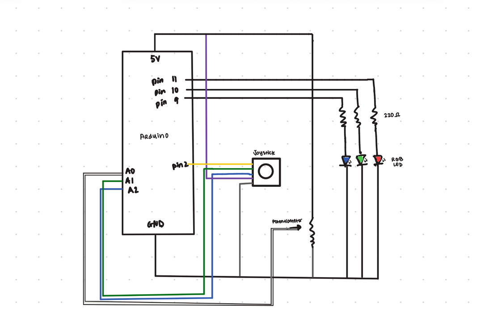

For this assignment, I created a simple interactive art piece that allows users to control the color of an LED using a joystick. I wanted to explore physical expressiveness in digital art. The joystick acts as a tangible brush, and the LED provides feedback, connecting physical and digital spaces.
Schematic

The joystick’s VRx and VRy pins are connected to analog inputs A1 and A2 so the Arduino can read horizontal and vertical movement as variable voltages (0–1023). The potentiometer is connected to A0 to control brush size. The joystick button is connected to digital pin 3 using INPUT_PULLUP (reads LOW when pressed). The RGB LED is connected to PWM pins 9, 10, and 11 so the Arduino can control brightness using analogWrite().
Circuit

As seen in the schematic, the joystick module is powered using 5V and GND from the Arduino and its VRx and VRy outputs are wired to A1 and A2. The potentiometer’s outer pins connect to 5V and GND, with the middle pin connected to A0. The joystick button connects to digital pin 3 and uses the Arduino’s internal pull-up resistor. The RGB LED’s red, green, and blue channels connect to PWM pins 11, 10, and 9 respectively, each through a current-limiting resistor, and it's common pin connected to ground.
The Arduino’s analogRead() function returns values from 0–1023 because it uses a 10-bit analog-to-digital converter (2^10 = 1024 possible values). These values are mapped in p5.js from 0–1023 to the canvas width (0-600) and height (0-400) and brush size (5–80). RGB brightness values are sent back to the Arduino in a range of 0–255 because analogWrite() uses 8-bit PWM (2^8 = 256 levels).
Resistor calculation for RGB LED (5V source, 20mA desired current):
- R = (Vsource − VLED) / I
- Red ≈ (5V − 2V) / 0.02A = 150 Ω
- Green/Blue ≈ (5V − 3V) / 0.02A = 100 Ω
For consistency, 220Ω resistors were used for all three channels to safely limit current and protect the LED while maintaining brightness.
Circuit Operation
Video Link: https://drive.google.com/file/d/16lTz_zfTWq6DknmS8YwaaD8wKIvFb__x/view?usp=sharing
When the joystick is moved the brush moves on the canvas. The potentiometer controls the size of the brush, allowing for dynamic control in stroke width. Pressing the joystick button cycles through red, green, and blue colors for the brush, which are sent to the Arduino to update the RGB LED’s color in real time (potential to add more colors!!).
Code
Arduino Code
// ----------- PIN SETUP ----------- //
// PWM pin controlling RED channel of RGB LED
const int redRGB = 11;
// PWM pin controlling GREEN channel
const int greenRGB = 10;
// PWM pin controlling BLUE channel
const int blueRGB = 9;
// Potentiometer connected to analog pin A0
const int potPin = A0;
// Joystick horizontal axis connected to A1
const int pinX = A1;
// Joystick vertical axis connected to A2
const int pinY = A2;
// Joystick button connected to digital pin 3
const int pinSW = 3;
// ----------- SETUP ----------- //
void setup() {
// Set RGB pins as outputs
pinMode(redRGB, OUTPUT);
pinMode(greenRGB, OUTPUT);
pinMode(blueRGB, OUTPUT);
// Set joystick button as input with internal pull-up resistor
pinMode(pinSW, INPUT_PULLUP);
// Start serial communication at 9600 baud
Serial.begin(9600);
}
// ----------- LOOP ----------- //
void loop() {
// Read joystick X value (0–1023)
int joyX = analogRead(pinX);
// Read joystick Y value (0–1023)
int joyY = analogRead(pinY);
// Read potentiometer value (0–1023)
int potVal = analogRead(potPin);
// Read joystick button (LOW when pressed)
int buttonVal = digitalRead(pinSW);
// Send values to p5.js as comma-separated string
Serial.print(joyX);
Serial.print(",");
Serial.print(joyY);
Serial.print(",");
Serial.print(potVal);
Serial.print(",");
Serial.println(buttonVal);
// Check if p5 sent RGB values
if (Serial.available()) {
// Read incoming RGB string
String data = Serial.readStringUntil('\n');
// Variables to hold parsed RGB values
int r, g, b;
// Parse comma-separated RGB values
if (sscanf(data.c_str(), "%d,%d,%d", &r, &g, &b) == 3) {
// Set LED brightness using PWM
analogWrite(redRGB, r);
analogWrite(greenRGB, g);
analogWrite(blueRGB, b);
}
}
// Small delay for stability
delay(20);
}
p5.js Code
// --------------------- VARIABLES --------------------- //
// Web Serial API variables
let port, reader, inputDone, inputStream;
// Joystick and potentiometer values, button state
let joyX = 0, joyY = 0, potVal = 0, buttonVal = 1;
// Brush position on canvas
let brushX = 300, brushY = 200, brushSize = 20;
let targetX = 300, targetY = 200;
// Brush color values (RGB)
let brushR = 0, brushG = 0, brushB = 255;
// Track last button state to detect presses
let lastButtonState = 1;
// --------------------- SETUP --------------------- //
function setup() {
createCanvas(600, 400); // Create a 600x400 drawing canvas
background(255); // Set canvas background to white
textSize(14); // Set text size for any debug info
// Create a button to connect to Arduino via Web Serial
createButton("Connect to Arduino")
.position(10, 10) // Position button near top-left
.mousePressed(connectSerial); // Call connectSerial() on click
}
// --------------------- DRAW --------------------- //
function draw() {
// Map joystick values to canvas coordinates
targetX = map(joyX, 0, 1023, 0, width); // X: joystick 0–1023 → canvas width
targetY = map(joyY, 0, 1023, 0, height); // Y: joystick 0–1023 → canvas height
// Smoothly move brush toward target (creates easing effect)
brushX = lerp(brushX, targetX, 0.2);
brushY = lerp(brushY, targetY, 0.2);
// Map potentiometer value to brush size (range 5–80)
brushSize = map(potVal, 0, 1023, 5, 80);
// Draw brush as a semi-transparent circle
noStroke(); // No outline
fill(brushR, brushG, brushB, 150); // Fill color with transparency
circle(brushX, brushY, brushSize); // Draw circle at brushX, brushY
// Detect joystick button press to change color
if (buttonVal == 0 && lastButtonState == 1) { // Button just pressed
cycleColor(); // Cycle RGB colors
sendColorToArduino(); // Send new color to LED immediately
}
lastButtonState = buttonVal; // Update last button state
}
// --------------------- CYCLE --------------------- //
// Cycle through RGB colors on each button press
function cycleColor() {
if (brushR == 0 && brushG == 0 && brushB == 255) { // Currently blue
brushR = 255; brushG = 0; brushB = 0; // Change to red
} else if (brushR == 255 && brushG == 0 && brushB == 0) { // Currently red
brushR = 0; brushG = 255; brushB = 0; // Change to green
} else { // Currently green
brushR = 0; brushG = 0; brushB = 255; // Change to blue
}
}
// Clear canvas when 'c' key is pressed
function keyPressed() {
if (key === 'c') background(255); // Reset background to white
}
// ------------------ SERIAL ------------------ //
// Connect to Arduino via Web Serial API
async function connectSerial() {
port = await navigator.serial.requestPort(); // Prompt user to select port
await port.open({ baudRate: 9600 }); // Open port at 9600 baud
const decoder = new TextDecoderStream(); // Create text decoder for serial data
inputDone = port.readable.pipeTo(decoder.writable); // Pipe serial to decoder
inputStream = decoder.readable; // Get readable stream
reader = inputStream.getReader(); // Get reader for reading lines
readLoop(); // Start reading incoming data
sendColorToArduino(); // Send initial brush color to LED
}
// Buffer to store incomplete serial lines
let buffer = "";
// Continuously read serial data from Arduino
async function readLoop() {
while (true) {
const { value, done } = await reader.read(); // Read chunk of serial data
if (done) { reader.releaseLock(); break; } // Exit loop if port closed
if (value) {
buffer += value; // Append incoming data
let lines = buffer.split("\n"); // Split into lines
buffer = lines.pop(); // Keep incomplete line
// Parse each complete line of data
for (let line of lines) {
line = line.trim(); // Remove whitespace
if (!line) continue; // Skip empty lines
const parts = line.split(","); // Split comma-separated values
if (parts.length === 4) { // Expect 4 values: joyX, joyY, pot, button
joyX = parseInt(parts[0]); // Convert X to integer
joyY = parseInt(parts[1]); // Convert Y to integer
potVal = parseInt(parts[2]); // Convert potentiometer value
buttonVal = parseInt(parts[3]); // Convert button state
}
}
}
}
}
// --------------------- BACK TO ARDUINO --------------------- //
// Send current brush RGB color to Arduino
async function sendColorToArduino() {
if (!port || !port.writable) return; // Exit if no port
const encoder = new TextEncoder(); // Create encoder for text
const writer = port.writable.getWriter(); // Get writer to send data
let colorString = brushR + "," + brushG + "," + brushB + "\n"; // Format RGB
await writer.write(encoder.encode(colorString)); // Send to Arduino
writer.releaseLock(); // Release lock after writing
}